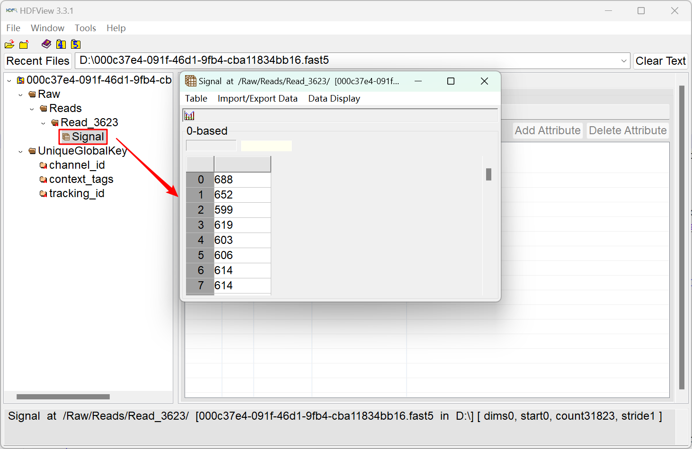
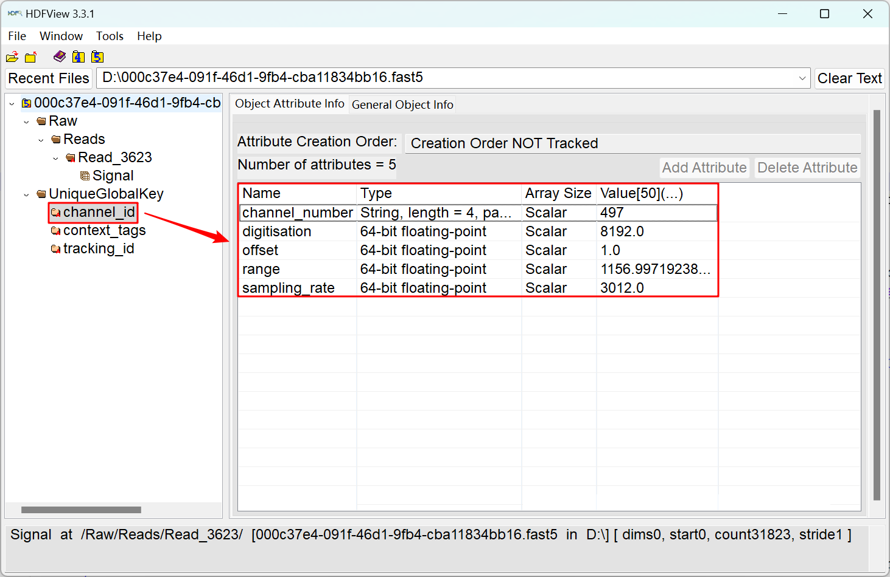
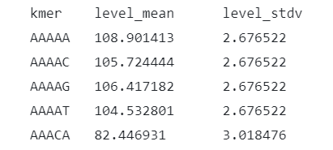

Nanopore signal processing
What is inside a fast5 file, how the integer signal becomes a current in picoamperes, and how the three event-alignment tools normalize it before any model sees it.
Raw signal conversion

Signal dataset of a single-fast5 file (int16).
channel_id attributes needed to convert the signal.A fast5 file is an HDF5 container. The Signal array is the raw current passing through the pore, stored as 16-bit integers. Oxford Nanopore uses different pore proteins in different products, and a single flow cell holds between 512 and 2,675 pores, each called a channel. The file also stores channel attributes: channel_number, digitisation (number of quantisation levels of the analog-to-digital converter), offset (ADC offset error), range (full-scale measurement range in picoamperes) and sampling_rate (ADC sampling frequency).
The raw integers are converted to picoamperes with the attributes of the channel_id group:
All downstream tasks work on the pA signal. A full description of the attributes is in the taiyaki file-format notes and the supplementary material of Wang et al. (2021); SLOW5 (Gamaarachchi et al., 2022) is a faster alternative container with the same content.
Signal standardization and normalization
Oxford Nanopore publishes a “standard” k-mer table for each pore model: the expected mean and standard deviation of the current for every k-mer (1,024 rows for 5-mers). Tools standardize each read against this table in different ways, and the choice matters for every downstream benchmark.

Tombo
Tombo normalizes with a median shift and a median-absolute-deviation (MAD) scale:
norm_signal = (signal_pA − median) / MADNanopolish
Nanopolish estimates a per-read scale parameter and applies it when --scale-events is passed to nanopolish eventalign. The model_mean and model_stdv columns of its output are the standard k-mer parameters; standardized_level is the z-score of the event against them.
SegPore
SegPore first detects the poly(A) tail of each read and computes its mean μpolyA and standard deviation σpolyA, then maps the read onto the standard parameters of the k-mer AAAAA:
where μstand_polyA and σstand_polyA are the mean and standard deviation of AAAAA in ONT's k-mer table.
References
- Oxford Nanopore Technologies. Taiyaki file formats.
- Gamaarachchi, H., Samarakoon, H., Jenner, S.P. et al. Fast nanopore sequencing data analysis with SLOW5. Nature Biotechnology 40, 1026–1029 (2022).
- Oxford Nanopore Technologies. K-mer models.
- Tombo re-squiggle algorithm documentation.
- Wang, Y., Zhao, Y., Bollas, A., Wang, Y. & Au, K.F. Nanopore sequencing technology, bioinformatics and applications. Nature Biotechnology 39, 1348–1365 (2021). Supplementary information.
- Simpson, J.T. et al. Detecting DNA cytosine methylation using nanopore sequencing. Nature Methods 14, 407–410 (2017). Supplementary note on event scaling.